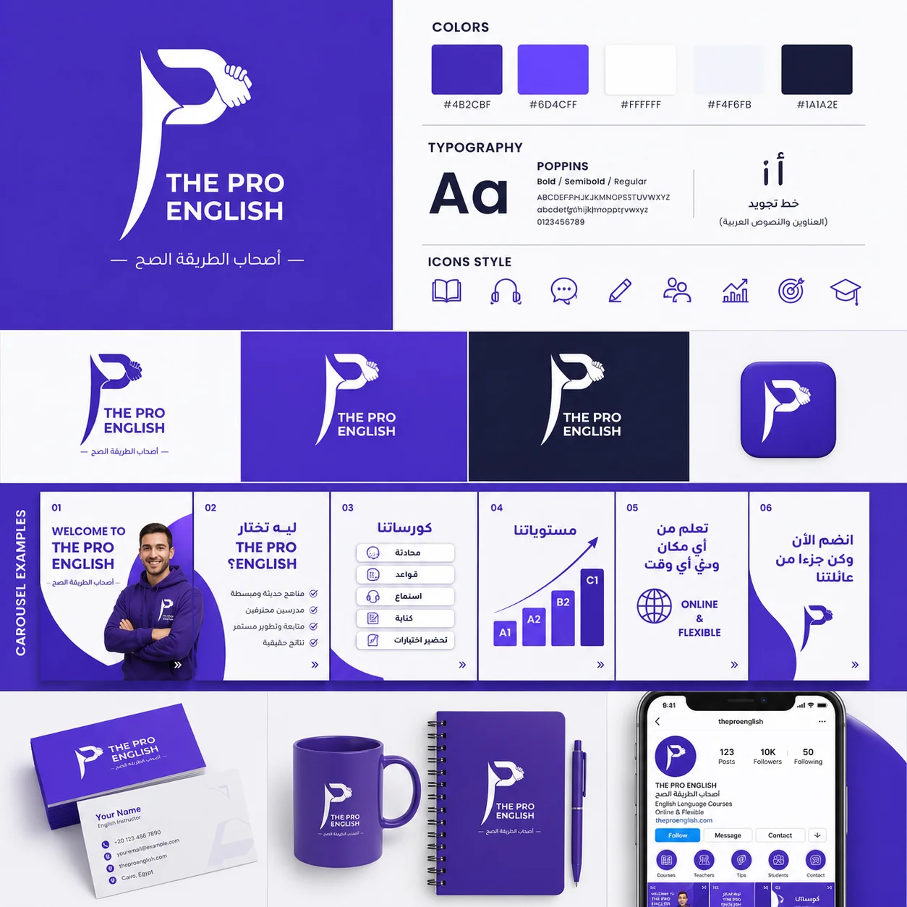
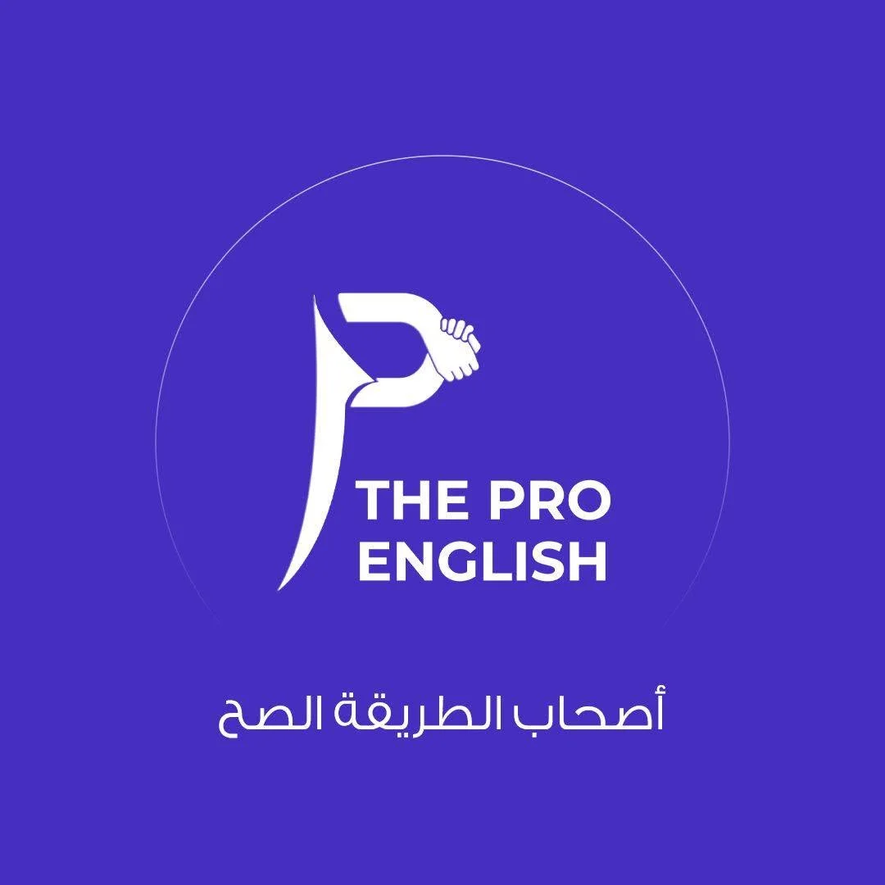
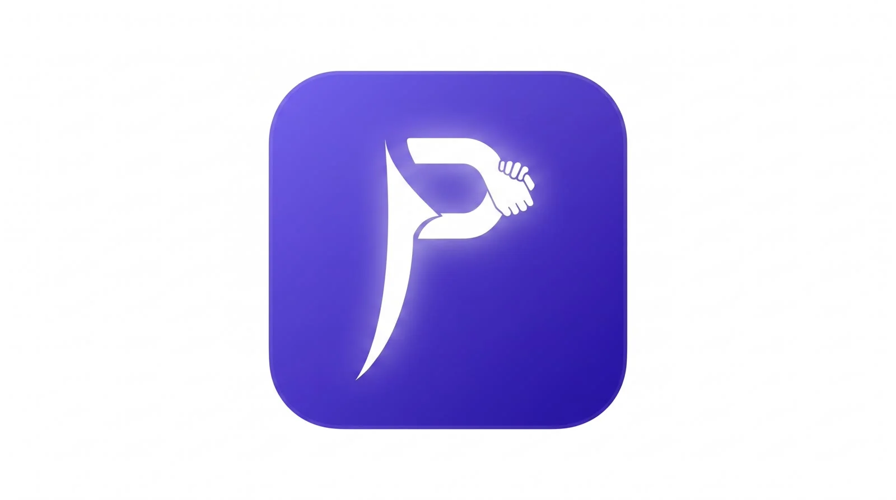
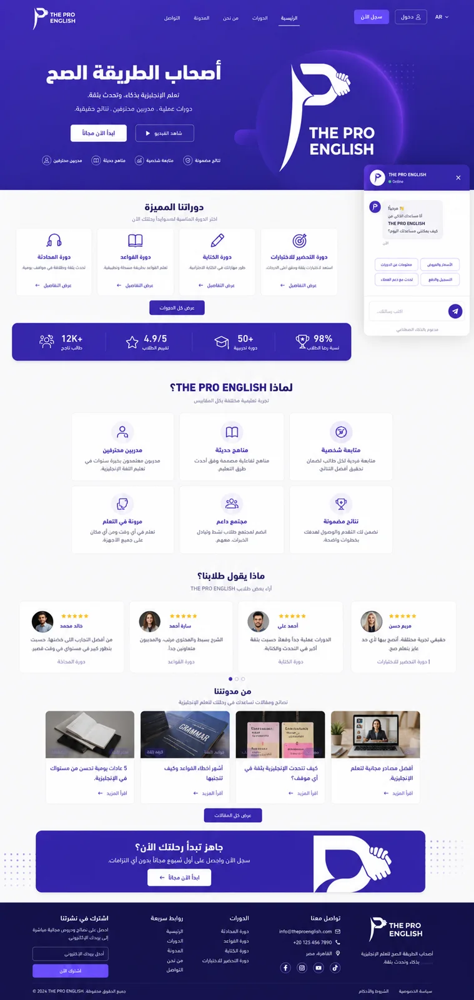
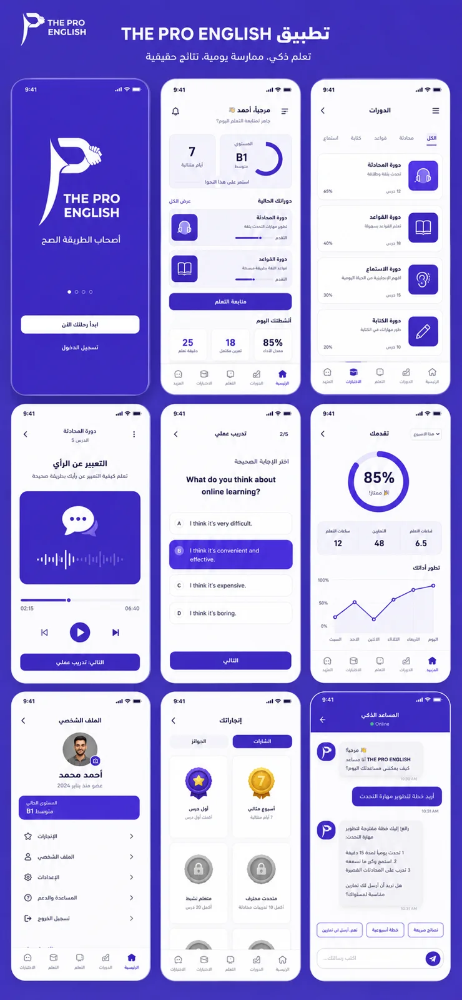
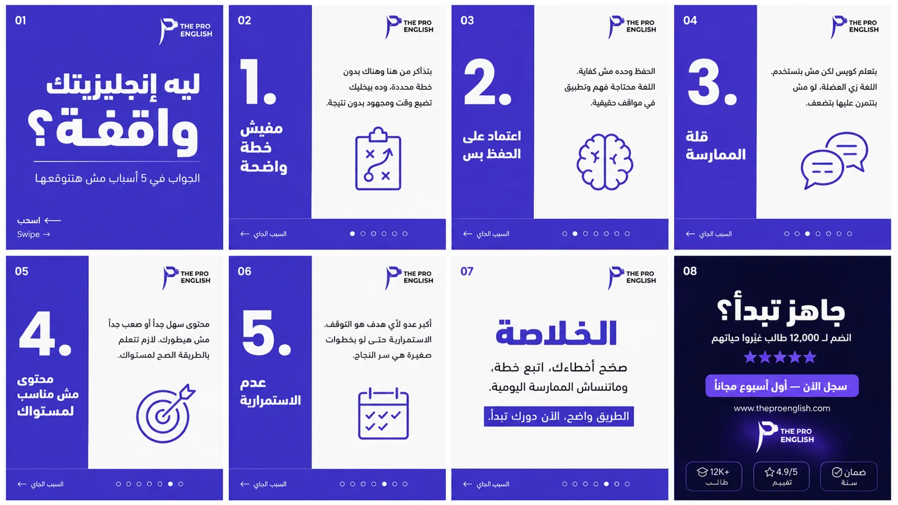
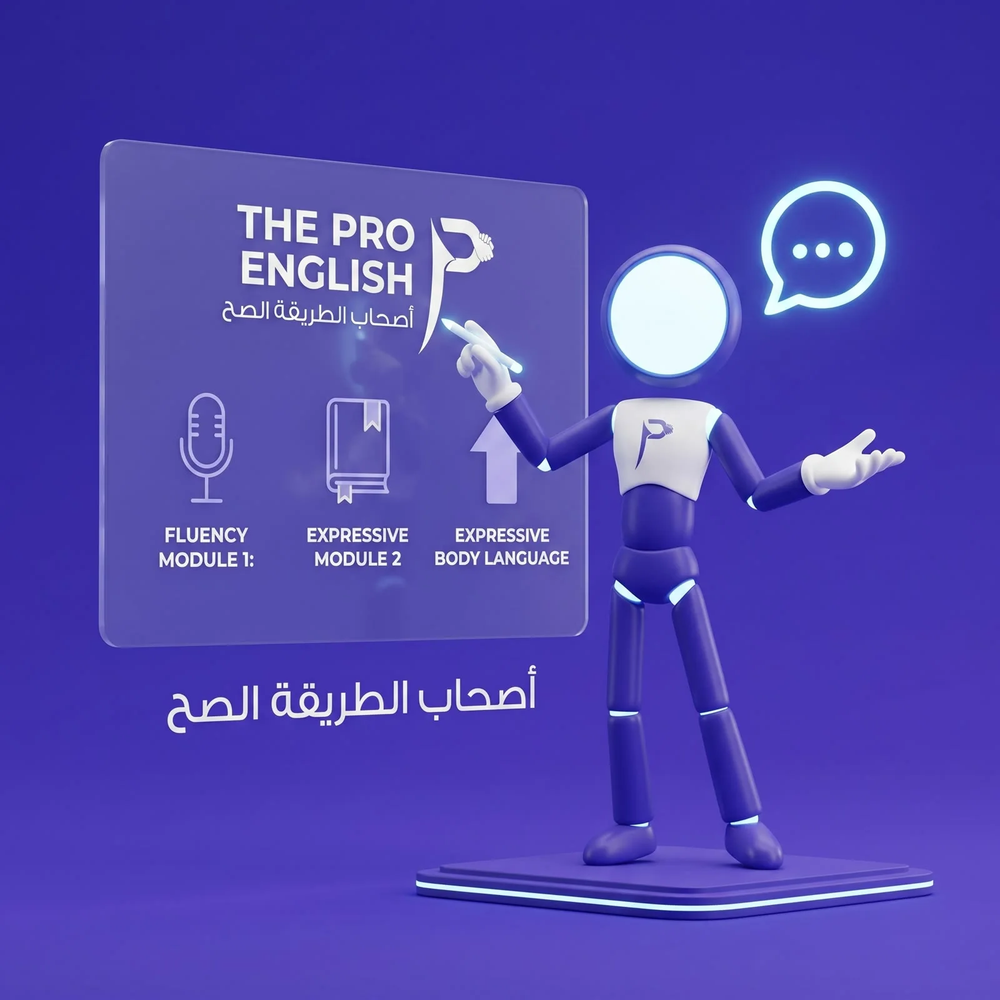
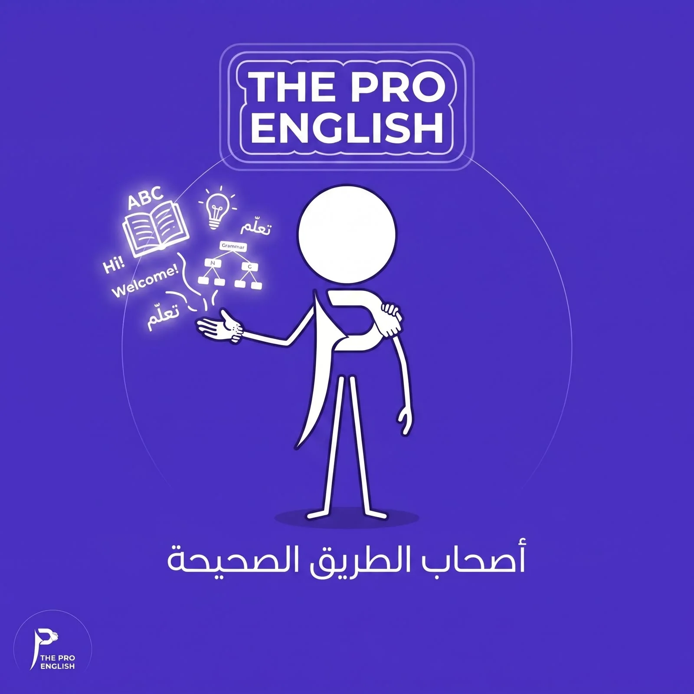
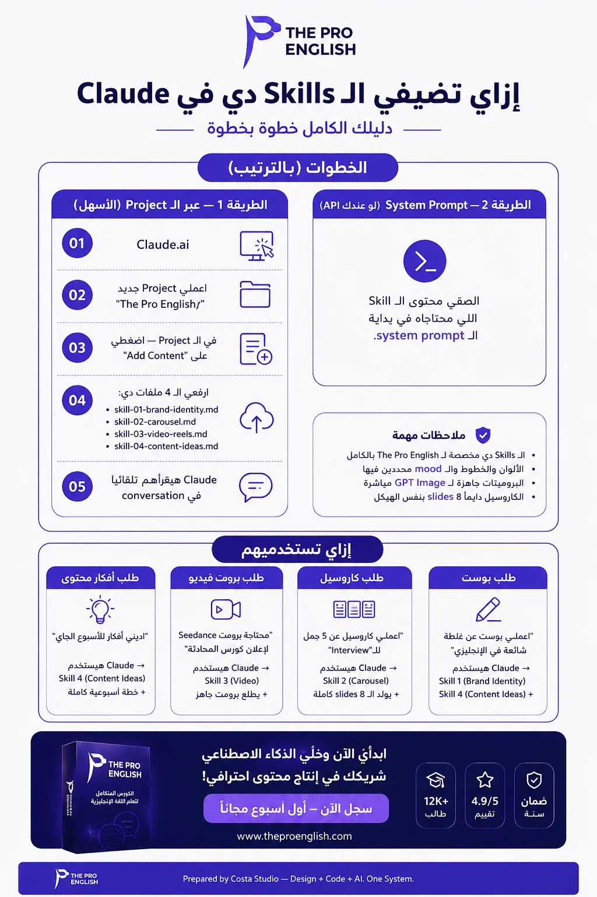
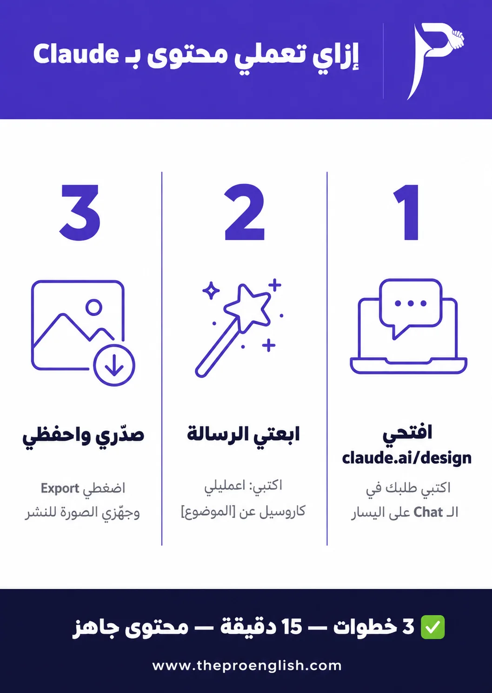

"أصحاب الطريقة الصح" — نظام متكامل لمنصة كورسات إنجليزي، من أول بكسل في الشعار لحد آخر ريلز على السوشيال ميديا.

The Pro English منصة كورسات لغة إنجليزية جاية بفكرة واضحة — "أصحاب الطريقة الصح" — لكن من غير هوية بصرية حقيقية تعبّر عن الجدية والثقة دي. محتاجين شعار ونظام ألوان يميزهم، موقع وتطبيق يعكسوا نفس الهوية، ونظام محتوى ثابت الفريق الداخلي يقدر يستخدمه يوميًا على السوشيال ميديا من غير ما يرجعوا لمصمم في كل بوست.
 02 — الهوية البصرية
02 — الهوية البصرية
الشعار حرف "P" مدمج مع رمز يدين بتتصافحوا — رمزية الشراكة والثقة. الشكل ده بيتكرر بنفس القواعد في كل مكان: الموقع، التطبيق، السوشيال ميديا، والمطبوعات.



الموقع بُني كمنصة كورسات كاملة بتشمل تسجيل الدخول، تصنيف الكورسات بالمستوى (محادثة، قواعد، كتابة، اختبارات)، ومساعد ذكاء اصطناعي مدمج للرد على استفسارات الطلاب مباشرة.
تصميم تطبيق الموبايل بيكمّل نفس التجربة — تتبع تقدم شخصي، تمارين تفاعلية، وشات مساعد ذكي يقترح خطط تدريب حسب مستوى الطالب.


 04 — نظام المحتوى الثابت
04 — نظام المحتوى الثابت
ده الجزء اللي بيخلي الفريق مستقل — نظام برومتات جاهز لـ GPT Image 2 بيولّد محتوى بنفس الهوية البصرية بالظبط، من غير ما يحتاجوا مصمم في كل بوست.

بعيدًا عن الكاروسيل والبوستات الثابتة، اتعملت شخصية بصرية مستقلة (مجسم بنفسجي برأس مضيء) بتظهر في محتوى الفيديو بس — دورها إنها تكون "وش" العلامة التجارية في الريلز من غير ما تحتاج تصوير حقيقي في كل مرة.


 06 — الموشن جرافيك
06 — الموشن جرافيك
الشعار مش شكل ثابت بس — اتعمله نسخة متحركة (Motion Logo) بتتفتح بيها الفيديوهات والإعلانات، عشان أول ثانية في أي محتوى تبقى فيها هوية البراند واضحة. وده جنب نماذج حقيقية من فيديوهات موشن جرافيك اتنفذت فعليًا للبراند.
كل السكيلز دي متجهزة تتحط في Claude — مرة واحدة بس — وبعدها فريق The Pro English بيطلب أي محتوى بجملة عادية، وبيطلع بنفس الهوية البصرية أوتوماتيك من غير ما يحدد ألوان أو خطوط في كل مرة.


لو عايز تفاصيل أكتر عن طريقة الاستخدام والمشكلة اللي البراند حلها، دول الأدلة الكاملة اللي اتسلّمت للعميل:
 08 — قبل وبعد
08 — قبل وبعد
الفرق مش في شكل اللوجو بس — الفرق إن عمل محتوى احترافي بقى مهمة تتخلص في دقايق بدل أيام، وبنفس الهوية بالظبط في كل مرة.